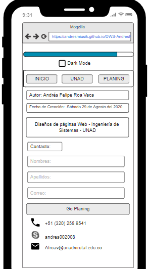
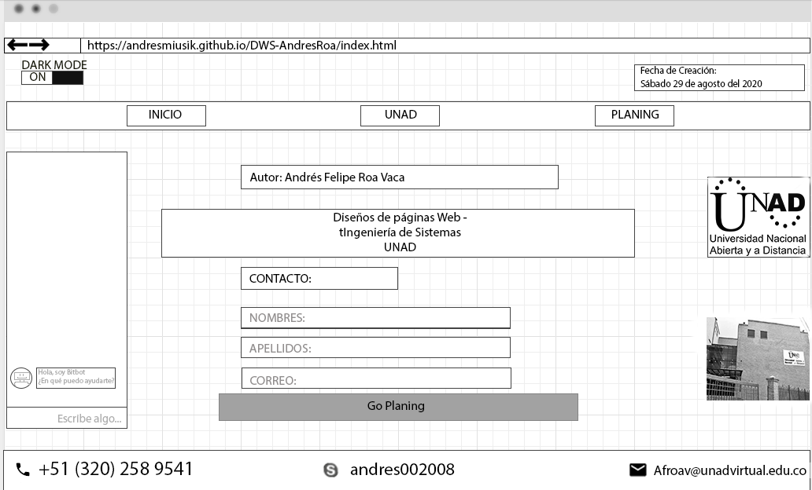

Se utilizará la página de eltiempo.com para demostrar el uso práctico de las etiquetas Header, Nav, Section, Article, Aside, Footer
Utilizaré una imagen hecha por mi sobre el modelo sencillo de un sitio web
RECURSOS
Se utilizará la página de eltiempo.com para demostrar el uso práctico de las etiquetas Header, Nav, Section, Article, Aside, Footer
Utilizaré una imagen hecha por mi sobre el modelo sencillo de un sitio web
El mockup para mi sitio web seria de esta manera, tanto para navegadores en PC como en dispositivos moviles.
 Los sitios web tienen principalmente la etiqueta header, es el encabezado de la páginas Web, una etiqueta Nav donde suele ir una barra o zona de navegación del sitio web, una etiqueta section que encapsula una parte de la información relacionada del sitio con la etiqueta article donde ira la información según el sitio web, para finalizar una etiqueta footer siendo el pie de página o el final del sitio para colcoar información generalmente utilizada para derechos de autor o contacto del sitio web.
La semantica básica para una página web se dividen las etiquetas header, nav, sectión, article, aside y footer. Cada uno planea un lugar de la página según la información que se quiera plasmar.